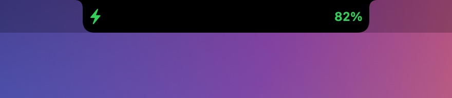
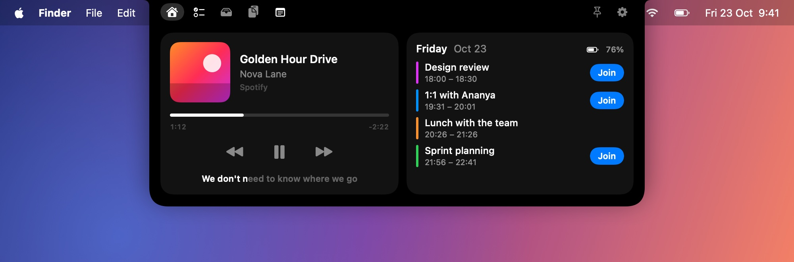
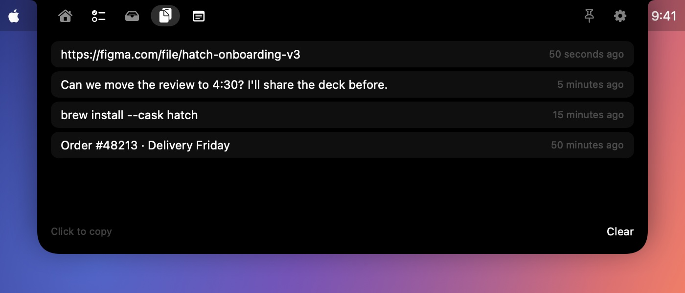
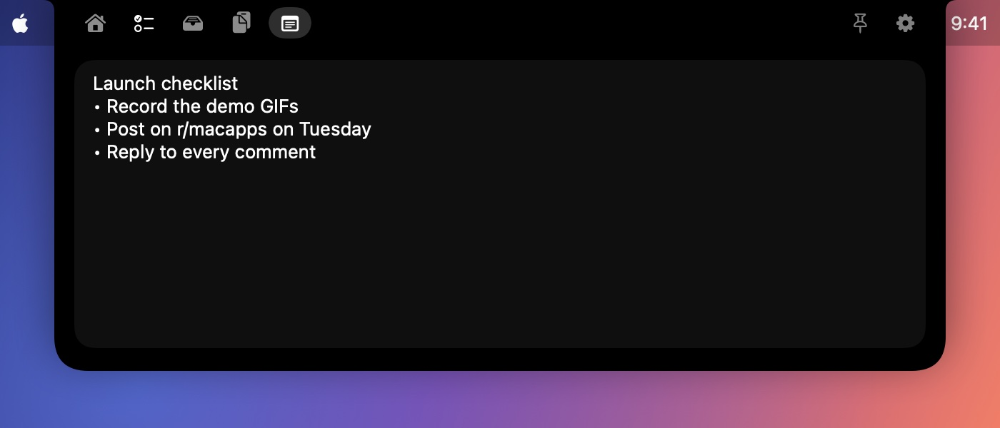

Alive, even when closed.
Hatch sits right beside your camera and shows what matters now, without covering your menu bar.



Hatch hides in your MacBook's notch and opens into your music, meetings, to-dos and files the moment you need them, then tucks itself away again.
No account, no subscription. Free during early access, then $4.99 once.

Hatch sits right beside your camera and shows what matters now, without covering your menu bar.

Apple Music, Spotify, and YouTube or any video in Safari, Chrome, Brave, Edge and Arc. See the artwork, scrub the timeline, and skip without switching apps.

Hatch reads today's calendar and finds the meeting link for you, even when it's buried in the notes or wrapped in an Outlook safe link.
Jot a to-do in seconds and choose when to be reminded: at the time, 15 or 30 minutes, 1, 2 or 6 hours before, or any custom time. When it's due, the notch drops down, shakes and chimes until you snooze it, finish it or delete it.


Drag anything onto the notch to park it. Drag it out later into any app, open it, or AirDrop it. Tray files stay put across restarts.

Hatch remembers the last things you copied, so one click brings them back. Passwords from password managers are skipped, and history stays in memory only. A quick notes pad saves as you type.


Hover, click, or press ⌃ ⌥ Space from anywhere. Pin it to keep it open.
No account, no tracking, no analytics. Hatch only goes online to fetch artwork and lyrics for what you're playing.
A tiny native app written in Swift. It uses almost no battery and launches at login.
This early-access build isn't notarized by Apple yet, so macOS asks you to approve it once.
Click Download to get Hatch.dmg, then open it.
Drag Hatch onto the Applications folder, then open it from there.
macOS says it "could not verify" Hatch. Click Done, then go to System Settings › Privacy & Security and click Open Anyway.
Allow Calendar and media control when asked. Hatch is now living in your notch.
You only approve it once. Releases after launch will be notarized by Apple and open straight away.
No subscription. Buy once, and Hatch keeps working, even offline and even if this website disappears.
Every feature, while Hatch is in early access.
7-day free trial, then a single payment.
Any Apple silicon Mac running macOS Sonoma (14) or later. It shines on MacBooks with a notch; on other displays it lives at the top centre of the screen.
Early-access builds aren't notarized by Apple yet, so macOS asks you to approve the app once in System Settings › Privacy & Security. Releases after launch will be notarized and open without the warning.
For Apple Music and Spotify, Hatch looks up time-synced lyrics on LRCLIB, a free, open lyrics database, sending only the song's title, artist, album and length. You can turn lyrics off in Settings.
Load the included browser extension in Chrome, Brave, Edge or Arc. Or turn on "Allow JavaScript from Apple Events" once in the browser (Chrome: View › Developer; Safari: Develop menu). Hatch only reads the playing video's title, time and artwork.
None. There are no accounts, analytics or tracking. Clipboard history stays in memory, and your to-dos, notes and tray files stay on your Mac.
Hatch will move to a 7-day free trial and a one-time $4.99 purchase. Licenses are verified on your Mac, so once you've bought it, it works for good.